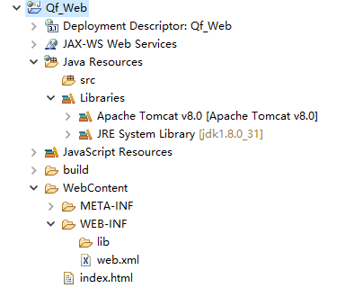

Web项目结构和Tomcat配置
复习
1、写出Js查找HTML元素 2、写出Js改变HTML内容 3、写出JS改变HTML的CSS样式 4、写出你知道的JS的Dom事件 5、写出JS的window对象的若干方法 6、写出Js的计时器 7、写出Js操作Cookie的方法
回顾
1、Js的DOM 2、Js的BOM 3、Js的计时器 4、Js的Cookie
内容
1、B/S和C/S的区别 2、Web的服务器 3、Tomcat的搭建 4、Web项目的结构 5、xml概述 6、xml解析
目标
1、掌握B/S和C/S的区别 2、了解Web的服务器 3、掌握Tomcat的搭建 4、掌握Web项目的结构 5、掌握xml语法规则 6、掌握常用的xml解析技术
第一章 Web应用的演变
1.1 B/S 与C/S模式
B/S:Browser/Server或浏览器/服务器模式 优点是用户使用简单只要有浏览器和网络即可 常见的程序：淘宝网、京东网等
C/S:Client/Server或客户端/服务器模式 C/S的优点是能充分发挥客户端PC的处理能力 缺点是对用户的电脑配置要求较高 常见的CS程序：LOL、穿越火线、QQ
1.2 Web服务器简介
Web服务器是运行及发布Web应用的容器，只有将开发的Web项目放置到该容器中，才能使网络中的所有用户通过浏览器进行访问。开发Java Web应用所采用的服务器主要是与JSP/Servlet兼容的Web服务器，比较常用的有Tomcat、Resin、JBoss、WebSphere 和 WebLogic 等
Tomcat 服务器 目前最为流行的Tomcat服务器是Apache-Jarkarta开源项目中的一个子项目，是一个小型、轻量级的支持JSP和Servlet 技术的Web服务器，也是初学者学习开发JSP应用的首选
Resin 服务器 Resin是Caucho公司的产品，是一个非常流行的支持Servlet和JSP的服务器，速度非常快。Resin本身包含了一个支持HTML的Web服务器，这使它不仅可以显示动态内容，而且显示静态内容的能力也毫不逊色，因此许多网站都是使用Resin服务器构建
JBoss服务器 JBoss是一个种遵从JavaEE规范的、开放源代码的、纯Java的EJB服务器，对于J2EE有很好的支持。JBoss采用JML API实现软件模块的集成与管理，其核心服务又是提供EJB服务器，不包含Servlet和JSP的Web容器，不过它可以和Tomcat完美结合
WebSphere 服务器 WebSphere是IBM公司的产品，可进一步细分为 WebSphere Performance Pack、Cache Manager 和WebSphere Application Server等系列，其中WebSphere Application Server 是基于Java 的应用环境，可以运行于 Sun Solaris、Windows NT 等多种操作系统平台，用于建立、部署和管理Internet和Intranet Web应用程序。
WebLogic 服务器 WebLogic 是BEA公司的产品（现在已经被Oracle收购），可进一步细分为 WebLogic Server、WebLogic Enterprise 和 WebLogic Portal 等系列，其中 WebLogic Server 的功能特别强大。WebLogic 支持企业级的、多层次的和完全分布式的Web应用，并且服务器的配置简单、界面友好。对于那些正在寻求能够提供Java平台所拥有的一切应用服务器的用户来说，WebLogic是一个十分理想的选择
第二章 Tomcat服务器搭建
2.1 Tomcat服务器介绍
Tomcat是Apache 软件基金会（Apache Software Foundation）的Jakarta 项目中的一个核心项目，由Apache、Sun 和其他一些公司及个人共同开发而成。由于有了Sun 的参与和支持，最新的Servlet 和JSP 规范总是能在Tomcat 中得到体现，Tomcat 5支持最新的Servlet 2.4 和JSP 2.0 规范。因为Tomcat 技术先进、性能稳定，而且免费，因而深受Java 爱好者的喜爱并得到了部分软件开发商的认可，成为目前比较流行的Web 应用服务器。
Tomcat 服务器是一个免费的开放源代码的Web 应用服务器，属于轻量级应用服务器，在中小型系统和并发访问用户不是很多的场合下被普遍使用，是开发和调试JSP 程序的首选。对于一个初学者来说，可以这样认为，当在一台机器上配置好Apache 服务器，可利用它响应HTML（标准通用标记语言下的一个应用）页面的访问请求。实际上Tomcat是Apache 服务器的扩展，但运行时它是独立运行的，所以当你运行tomcat 时，它实际上作为一个与Apache 独立的进程单独运行的。
诀窍是，当配置正确时，Apache 为HTML页面服务，而Tomcat 实际上运行JSP 页面和Servlet。另外，Tomcat和IIS等Web服务器一样，具有处理HTML页面的功能，另外它还是一个Servlet和JSP容器，独立的Servlet容器是Tomcat的默认模式。不过，Tomcat处理静态HTML的能力不如Apache服务器。目前Tomcat最新版本为9.0。
2.2 Tomcat安装
tomcat压缩版,安装特别方便,只需要右键解压即可!
Tomcat服务器的安装
注意:不建议将服务器软件放在磁盘层次很多的文件夹中!
不建议放在中文路径下!
tomcat安装需要配置JAVA_HOME环境变量
第一次启动服务器建议使用命名行打开,因为可以提示错误信息!
2.3 Tomcat目录的介绍
1、bin：该目录下存放的是二进制可执行文件，如果是安装版，那么这个目录下会有两个exe文件：tomcat9.exe、tomcat9w.exe，前者是在控制台下启动Tomcat，后者是弹出UGI窗口启动Tomcat；如果是解压版，那么会有startup.bat和shutdown.bat文件，startup.bat用来启动Tomcat，但需要JDK的配置，shutdawn.bat用来停止Tomcat； 2、conf：这是一个非常非常重要的目录，这个目录下有四个最为重要的文件： server.xml：配置整个服务器信息。例如修改端口号，添加虚拟主机等； tomcatusers.xml：存储tomcat用户的文件，这里保存的是tomcat的用户名及密码，以及用户的角色信息。可以按着该文件中的注释信息添加tomcat用户，然后就可以在Tomcat主页中进入Tomcat Manager页面了； web.xml：部署描述符文件，这个文件中注册了很多MIME类型，即文档类型。这些MIME类型是客户端与服务器之间说明文档类型的，如用户请求一个html网页，那么服务器还会告诉客户端浏览器响应的文档是text/html类型的，这就是一个MIME类型。客户端浏览器通过这个MIME类型就知道如何处理它了。当然是在浏览器中显示这个html文件了。但如果服务器响应的是一个exe文件，那么浏览器就不可能显示它，而是应该弹出下载窗口才对。MIME就是用来说明文档的内容是什么类型的！ context.xml：对所有应用的统一配置，通常我们不会去配置它。 3、lib：Tomcat的类库，里面是一大堆jar文件。如果需要添加Tomcat依赖的jar文件，可以把它放到这个目录中，当然也可以把应用依赖的jar文件放到这个目录中，这个目录中的jar所有项目都可以共享之，但这样你的应用放到其他Tomcat下时就不能再共享这个目录下的Jar包了，所以建议只把Tomcat需要的Jar包放到这个目录下； 4、logs：这个目录中都是日志文件，记录了Tomcat启动和关闭的信息，如果启动Tomcat时有错误，那么异常也会记录在日志文件中。 5、temp：存放Tomcat的临时文件，这个目录下的东西可以在停止Tomcat后删除！ 6、webapps：存放web项目的目录，其中每个文件夹都是一个项目；如果这个目录下已经存在了目录，那么都是tomcat自带的项目。其中ROOT是一个特殊的项目，在地址栏中没有给出项目目录时，对应的就是ROOT项目。http://localhost:8080/examples，进入示例项目。其中examples就是项目名，即文件夹的名字。 7、work：运行时生成的文件，最终运行的文件都在这里。通过webapps中的项目生成的！可以把这个目录下的内容删除，再次运行时会生再次生成work目录。当客户端用户访问一个JSP文件时，Tomcat会通过JSP生成Java文件，然后再编译Java文件生成class文件，生成的java和class文件都会存放到这个目录下。 8、LICENSE：许可证。 9、NOTICE：说明文件。
2.4 启动tomcat服务器
tomcat安装文件/bin/startup.bat 启动程序
测试
打开浏览器!输入 http://localhost:8080
如果出现以下界面证明成功!

2.4 在Eclipse中集成Tomcat服务器
1.打开Eclipse的window-->Preferences—>Server

2.点击add—>选择对应的版本—>Finish即可

3.然后选择右边的server—>空白处右键new—>server—>Finish即可。

4.再右键新建的服务器点击open，按照图片进行修改保存即可

5.选中新建的服务器右键start即可启动
第三章 JavaWEB项目创建及结构
3.1 javaWeb项目创建

输入项目名称点击Finsh即可
3.2 javaweb项目结构讲解

关于目录
Java web工程下的webapp或WebContent就是工程的发布文件夹，发布时会把该文件夹发布到tomcat的webapps里。
开发时classes文件存放路径：
buildpath：在eclipse中项目的右键java build path-source中指定工程中class文件的编译路径，一般为：test/build/classes。（test是工程名）
发布时classes文件存放路径：
发布到tomcat时（在eclipse里启动tomcat），src文件夹里的java文件经过编译后，会把.class文件放在WEB-INF文件夹里的classes文件夹中。
有一些配置文件需要放到WEB-INF的classes文件夹下，所以，通常的做法是手动在工程的WEB-INF文件夹下建立classes文件夹。如果不在工程的WEB-INF下手动建立classes，发布到tomcat时tomcat里的WEB-INF中也会有classes文件夹。
3.3 Web的jar
【Web App Libraries】 一般是指向web工程的 WEB-INF/lib下的包(可以将包copy到此目录下 然后刷新工程 加入的包一般可以自动找到 如果找不到 右键｜Properties |Java Build Path｜Libraries ｜Add JARs 可以加入)
build path中add jar可以引用工程文件夹以外的jar，如果引用了工程以外的jar，在.classpath文件中会添加（如java的jar包jre和tomcat的jar包）：
web工程参照了很多文件，因此发布的时候要打成war包，使其变成单独的个体，放到web容器里。 开发环境中eclipse会将工程打包放到tomcat下，进行关联。
3.4 web.xml
1.Web 应用名称：提供GUI工具可能会用来标记这个特定的Web应用的一个名称
<display-name>Tomcat Example</display-name>
2.Web 应用描述：给出于此相关的说明性文本
<desciption>Tomcat Example servlets and JSP pages.</desciption>
3.上下文参数：声明应用范围内的初始化参数
1 <context-param> 2 <param-name>参数名</para-name> 3 <param-value>参数值</param-value> 4 <description>参数描述</description> 5 </context-param>
在servlet里面可以通过 getServletContext().getInitParameter(“context/param”)得到
4.过滤器配置：将一个名字与一个实现javaxs.servlet.Filter接口的类相关联
1 <filter> 2 <filter-name>setCharacterEncoding</filter-name> 3 <filter-class>com.myTest.setCharacterEncodingFilter</filter-class> 4 <init-param> 5 <param-name>encoding</param-name> 6 <param-value>GB2312</param-value> 7 </init-param> 8 </filter> 9 <filter-mapping> 10 <filter-name>setCharacterEncoding</filter-name> 11 <url-pattern>/*</url-pattern> 12 </filter-mapping>
5.监听器配置
1 <listener> 2 <listerner-class>org.springframework.web.context.ContextLoaderListener</listener-class> 3 </listener>
6.Servlet配置
1 <servlet> 2 <servlet-name>servlet名称</servlet-name> 3 <servlet-class>servlet类全路径</servlet-class> 4 <init-param> 5 <param-name>参数名</param-name> 6 <param-value>参数值</param-value> 7 </init-param> 8 <run-as> 9 <description>Security role for anonymous access</description> 10 <role-name>tomcat</role-name> 11 </run-as> 12 <load-on-startup>指定当Web应用启动时，装载Servlet的次序</load-on-startup> 13 </servlet> 14 <servlet-mapping> 15 <servlet-name>servlet名称</servlet-name> 16 <url-pattern>映射路径</url-pattern> 17 </servlet-mapping>
7.会话超时配置（单位为分钟）
1 <session-config> 2 <session-timeout>120</session-timeout> 3 </session-config>
8.MIME类型配置
1 <mime-mapping> 2 <extension>htm</extension> 3 <mime-type>text/html</mime-type> 4 </mime-mapping>
9.指定欢迎文件页配置
1 <welcome-file-list> 2 <welcome-file>index.jsp</welcome-file> 3 <welcome-file>index.html</welcome-file> 4 <welcome-file>index.htm</welcome-file> 5 </welcome-file-list>
10.配置错误页面
(1).通过错误码来配置error-page
1 <!--配置了当系统发生404错误时，跳转到错误处理页面NotFound.jsp--> 2 <error-page> 3 <error-code>404</error-code> 4 <location>/NotFound.jsp</location> 5 </error-page>
(2).通过异常的类型配置error-page
1 <!--配置了当系统发生java.lang.NullException（即空指针异常）时，跳转到错误处理页面error.jsp--> 2 <error-page> 3 <exception-type>java.lang.NullException</exception-type> 4 <location>/error.jsp</location> 5 </error-page>
10.TLD配置
1 <taglib> 2 <taglib-uri>http://jakarta.apache.org/tomcat/debug-taglib</taglib-uri> 3 <taglib-location>/WEB-INF/jsp/debug-taglib.tld</taglib-location> 4 </taglib>
如果开发工具一直在报错,应该把
1 <jsp-config> 2 <taglib> 3 <taglib-uri>http://jakarta.apache.org/tomcat/debug-taglib</taglib-uri> 4 <taglib-location>/WEB-INF/pager-taglib.tld</taglib-location> 5 </taglib> 6 </jsp-config>
第四章 XML概述
4.1 什么是XML
- XML 指可扩展标记语言（EXtensible Markup Language）
- XML 是一种标记语言，很类似 HTML
- XML 的设计宗旨是传输数据，而非显示数据
- XML 标签没有被预定义。您需要自行定义标签。
- XML 被设计为具有自我描述性。
- XML 是 W3C 的推荐标准
4.2 XML 与 HTML 的主要差异
XML 不是 HTML 的替代。
XML 和 HTML 为不同的目的而设计：
XML 被设计为传输和存储数据，其焦点是数据的内容。
HTML 被设计用来显示数据，其焦点是数据的外观。
HTML 旨在显示信息，而 XML 旨在传输信息。
4.3 XML语法
XML 标签对大小写敏感
XML 元素都须有关闭标签
XML 文档必须有根元素
XML 的属性值须加引号
4.4 XML 命名规则
XML 元素必须遵循以下命名规则：
- 名称可以含字母、数字以及其他的字符
- 名称不能以数字或者标点符号开始
- 名称不能以字符 “xml”（或者 XML、Xml）开始
- 名称不能包含空格
可使用任何名称，没有保留的字词。
4.5 特殊字符
| < | < | 小于 |
|---|---|---|
| > | > | 大于 |
| & | & | 和号 |
| ' | ' | 单引号 |
| " | " | 引号 |
第五章 XML解析
文档：
xxxxxxxxxx <dogs><dog id="1"> <name>旺财</name> <type>哈士奇</type></dog><dog id="2"> <name>豆豆</name> <type>中华田园犬</type></dog><dog id="3"> <name>花花</name> <type>藏獒</type></dog></dogs>根据xml文件创建对应的类
Dog.java
xxxxxxxxxxpublic class Dog { private int id; private String name; private String type; public int getId() { return id; } public void setId(int id) { this.id = id; } public String getName() { return name; } public void setName(String name) { this.name = name; } public String getType() { return type; } public void setType(String type) { this.type = type; } public String toString() { return "Dog{" + "id=" + id + ", name='" + name + '\'' + ", type='" + type + '\'' + '}'; }}5.1 Dom4j解析
5.1.1 什么是Dom4j
dom4j是一个Java的XML API，是jdom的升级品，用来读写XML文件的。dom4j是一个十分优秀的JavaXML API，具有性能优异、功能强大和极其易使用的特点，它的性能超过sun公司官方的dom技术，同时它也是一个开放源代码的软件，可以在SourceForge上找到它。在IBM developerWorks上面还可以找到一篇文章，对主流的Java XML API进行的性能、功能和易用性的评测，所以可以知道dom4j无论在哪个方面都是非常出色的。如今可以看到越来越多的Java软件都在使用dom4j来读写XML，特别值得一提的是连Sun的JAXM也在用dom4j。这已经是必须使用的jar包， Hibernate也用它来读写配置文件。
5.1.2 核心类
SAXReader Dom4J的读取文件的类
常用方法：
read 读取指定的xml文件
Document 文档类 用于加载指定的文档
常用方法：
getRootElement 获取根节点
Element 标签类，元素
常用方法：
elements 获取所有的直接子标签
attribute 获取指定属性名称的属性对象
elementText 获取指定标签名称的文本内容
element 获取指定标签名称的标签对象
5.1.3 代码实现xm解析
xxxxxxxxxxpublic class Dom4j_Case { public static void main(String[] args) throws Exception { //创建xml读取对象 SAXReader reader=new SAXReader(); //读取要解析的xml文件 Document document=reader.read(new FileInputStream("xml/dogs.xml")); //获取根节点 Element root=document.getRootElement(); //获取所有的直接子标签 List<Element> elements = root.elements(); List<Dog> dogs=new ArrayList<>(); //遍历 for(Element element:elements) { Dog dog=new Dog(); //获取指定属性名称的值 dog.setId(Integer.parseInt(element.attribute("id").getText())); //获取指定元素的值 dog.setName(element.elementText("name")); dog.setType(element.elementText("type")); //添加到集合 dogs.add(dog); } //输出 System.out.println(dogs); }}5.2 SAX解析
5.2.1 什么是SAX
SAX，全称Simple API for XML，既是一种接口，也是一种软件包。它是一种XML解析的替代方法。SAX不同于DOM解析，它逐行扫描文档，一边扫描一边解析。由于应用程序只是在读取数据时检查数据，因此不需要将数据存储在内存中，这对于大型文档的解析是个巨大优势
5.2.2 SAX优缺点
SAX的优点：
- 解析速度快
- 占用内存少
SAX的缺点：
- 无法知道当前解析标签（节点）的上层标签，及其嵌套结构，仅仅知道当前解析的标签的名字和属性，要知道其他信息需要程序猿自己编码
- 只能读取XML，无法修改XML
- 无法随机访问某个标签（节点）
SAX解析适用场合
SAX解析适用场合 对于CPU资源宝贵的设备，如Android等移动设备对于只需从xml读取信息而无需修改xml
5.2.3 代码实现
创建自定义处理数据的模板类
xxxxxxxxxxpublic class DogHandler extends DefaultHandler{ private List<Dog> dogs; private String tagName; private Dog dog; public List<Dog> getDogs() { return dogs; } //开始文档解析 public void startDocument() throws SAXException { // TODO Auto-generated method stub super.startDocument(); dogs=new ArrayList<>(); tagName=""; } //开始标签 public void startElement(String uri, String localName, String qName, Attributes attributes) throws SAXException { // TODO Auto-generated method stub super.startElement(uri, localName, qName, attributes); if(qName.equals("dog")) { dog=new Dog(); dog.setId(Integer.parseInt(attributes.getValue("id"))); } tagName=qName; } //结束标签 public void endElement(String uri, String localName, String qName) throws SAXException { // TODO Auto-generated method stub super.endElement(uri, localName, qName); if(qName.equals("dog")) { dogs.add(dog); dog=null; } tagName=""; } //文本内容 public void characters(char[] ch, int start, int length) throws SAXException { // TODO Auto-generated method stub super.characters(ch, start, length); String value=new String(ch, start, length); switch (tagName) { case "name": dog.setName(value); break; case "type": dog.setType(value); break; } } //结束文档解析 public void endDocument() throws SAXException { // TODO Auto-generated method stub super.endDocument(); }}使用SAX进行解析
xxxxxxxxxxpublic class SAX_Case { public static void main(String[] args) throws Exception { //创建解析器工厂 SAXParserFactory factory=SAXParserFactory.newInstance(); //创建解析器 SAXParser parser=factory.newSAXParser(); //创建自定义模板对象 DogHandler handler=new DogHandler(); //开始解析 parser.parse(new FileInputStream("xml/dogs.xml"),handler); //输出解析结果 System.out.println(handler.getDogs()); }}作业题
1、自己创建一个web项目，完成一个新闻浏览的静态网站 要求： 1、新闻列表，要求可以点击，浏览详情 2、新闻详情，在底部显示上一篇和下一篇的链接地址 3、发布到服务器上 2、创建一个xml文件，使用2种解析方式进行文档的解析
面试题
1、请写出使用TomCat，遇到过的问题 2、请说出常用的xml解析技术和区别？